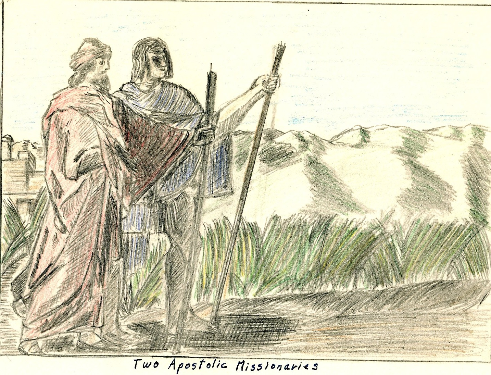
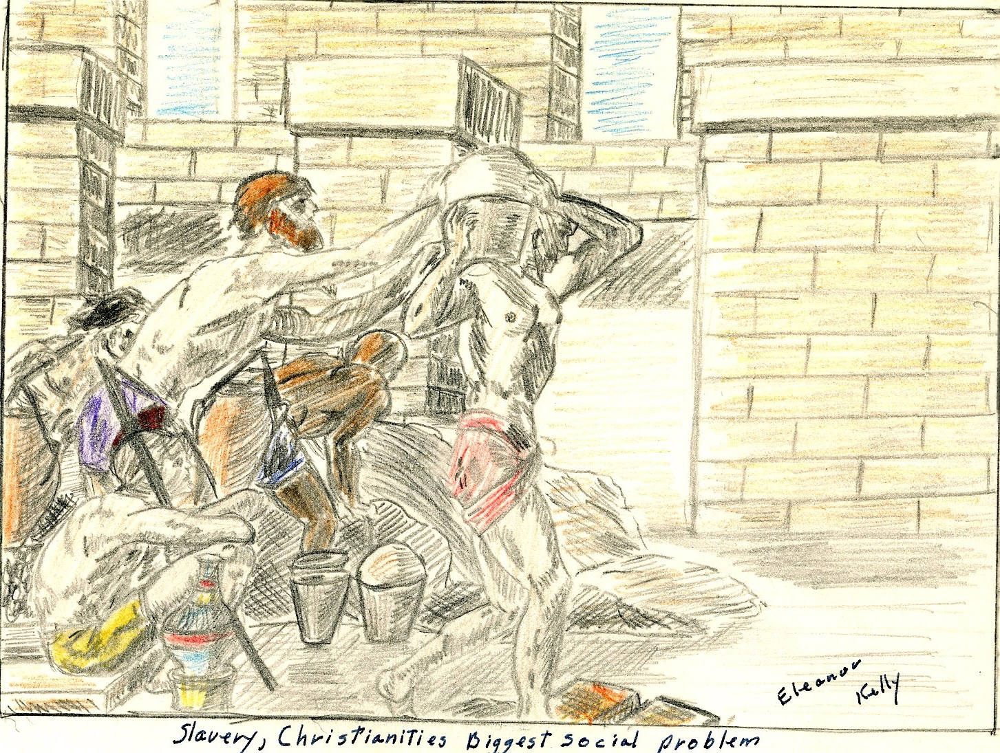

THE PRIMITIVE CHRISTIAN CHURCH
by Eleanor
Kelly, Dec 1960
Texas
Christian University
OUTLINE
I. INTRODUCTION
II. CONVERSION & MEMBERSHIPS
A. PERSECUTIONS
B. REASONS
FOR VICTORY
C. REQUIREMENTS
FOR MEMBERSHIP
III. THE CHURCH & SOCIETY
IV. ORGANIZATION & OFFICERY
V. DAYS & CERIMONIES OF WORSHIP
VI. CONCLUSION
INTRODUCTION
The Apostolic
Church[i]
was considered to be the period of the first century
A.D. from Pentecost (about May 17, 29 A.D.) to approximately 100A.D. when all
the apostles were dead. During the last quarter of the century, however, only one
apostle was alive, this was John, the beloved who is believed to have died of
natural causes somewhere between A.D. 98-117.
The importance
of this first primitive church and its influence on our civilization today
cannot be estimated, but the influence on the world in that period can. Society
rose to a much higher standard, slaves were freed, slums were cleared up, and
people generally cared more about how they lived both morally and in their physical
environment.
CONVERSION
& MEMBERSHIPS
Any new
idea takes time and suffering to put across, and Christianity was no exception.
Before the end of the Apostolic era, the Christians had gone under two large
persecutions and innumerable smaller ones. Besides this, the early missionaries
had many mythical gods and goddesses to contend with while preaching in Greek
and Roman cities.
Although
the first few years saw little organization and no set forms of worship, the
church, before 100 years were up had conquered the than
known world almost completely.
The loyalty
and devotion of these first followers to Christ, and the zeal with which they
proclaimed the Gospel, brought about the most widespread movement ever seen
in the history of the world. Their story is one of adventure, love, loyalty
and devotion to the living Christ.
Pentecost[ii]
the celebrated beginning of the church was actually not the birthday of
the church but marked the epoch in proclamation of the Gospel in the disciples conviction
of Christs presence and the increase
of adherents to the new faith, for as it says in Acts 2:41 that on the day
of Pentecost about 3000 believers in Christianity were baptized and later in
the same day in the Synagogue about 2000 more were added![iii]

The Jerusalem
congregation was filled with messianic hope and although cruder and less spiritual
than Jesus had taught, they were devoted in loyalty to Christ, who, they believed,
would return but whom heaven must receive till the restoration of all things.
While they waited the Lord's coming they provided
for the needy and had all things in common.[iv]
The Jerusalem
church, and associated Palestinian communities did not
influence Christianity as a whole by permanent leadership development but was an
important fountain from which Christianity first flowed and was also important
in securing preservation of many memorials and words of Jesus life that
otherwise would have been lost.
At the
time of the first missionary endeavors people were becoming unsatisfied with
their religions, especially the educated and a strong desire of atonement for
mistakes a
and unquenchable desire to look
beyond the grave rose up.
To meet
these longings, religions known as the mysteries were invented. These religions
were partly nature worship and tried to link the worshiper to nature through reference
to the seasons. These mystery religions also made appeal to the love of sacred
ritual and spoke to the demand of certain items of religion.
The Mithra
cult which was the most popular or the mystery religions, taught high morality
and laid emphasis on courage, honesty, and chastity. This appealed mostly to
soldiers. In the end the Mithra cult gave the most opposition to Christianity.
Large
numbers of people were adherents to the mysterious religions because no-one
was required to change his life as a result of their
initiation.
Although
the mystery religions gave the most opposition there were others which also
presented stumbling blocks for Christianity.
The Stoic
Philosophy was one of these held in the first century. Their philosophy was
a pantheism which ran into atheism. They believed that the whole world was God and
that He was not personal which is exactly opposite of the Christian belief.
Another
religion which gave opposition to the Christian missionaries was what was called
Gnosticism. Thes used resources of the then so-called science to make a religion
acceptable to the highly educated.
Judaism
presented the hardest of the early opposition to overcome. Although the
first Jewish Christians kept in obedience to Jewish law, the fact that the Jewish
Christians held
their own special services among
themselves, with prayers, mutual exhortation, and breaking bread in private houses
caused the Jewish Pharisees and Sadducees to bring trouble from the Sanhedrin[v]
to the Christians.
These religions,
and possibly a few other minor religions presented the only opposition in this
line.
The assumption
of human wickedness and human impotency in the face of personal and social
evil provided a good reason why Grecian intellectuals and Roman nobles found
it difficult to accept the claim of the Apostolic church.
The first violent uprising against
the Christians on record where someone was killed, was the spring following
Christes crucifixion. This first martyr was Stephen,
a young Greek,
and was martyred because of the
faithful way he preached the gospel to the betrayers and murderers of Christ. The
crowd (mostly pharisees from the temple) was exited to such a degree of madness that
they cast him out of Jerusalem and stoned him to death.[vi]
As a result
of Stephens stoning, a persecution was raised against about 2000 Christians
in Jerusalem. This caused almost all the Christians, with the exception of the apostles, to be
scattered abroad throughout all
Judea and Samaria where they went about preaching.[vii]

PERSECUTIONS
In A.D.
51-52 under Claudius[viii]
tumults among the Jews consequent upon Christian teaching brought governmental attention
from Rome itself; but this was short lived and nothing
was done to harm the Christians.
In A.D.
64, a great fire in Rome, which destroyed a large part of that city, brought
what was called the Neronian persecution. Nero[ix]
to turn the blame for the fire from himself persecuted the Christians. This was
not a persecution against Christianity as an unlawful religion and was confined
to Rome and the vicinity thereof. People continued to think that the
fire was caused by Nero's command,
so Nero caused Christians to be seized, convicted, insulted, and killed by
mangling of dogs or on crosses burned as light by night. From this persecution came
sympathy toward the Christians as being destroyed not for public good but to
satisfy the cruelty of one individual.
From A.D.
81-96, under the Roman emperor Domitian[x]
there was another persecution with charges of atheism. Superstition due
to his than misunderstanding of Christian faith and worship caused Flavius
Clemens[xi]
and many other Christians to be exiled to the island of Pontea in consequence of their testimony to Christ.
REASONS
FOR VICTORY
In spite
of all opposition and persecution the church lived on and
was victorious. The reasons for this are not hard to understand when its message
and what it offered to men individually is considered.
First the
church was one institution that showed hospitality and rendered aid to its
members. There was no other institution at this time that did this.[xii]
Other than
this there were many other leading causes for its victory some of these are:
external aid to missionary work, the world at that time was united almost completely
under the Roman empire, everyone spoke a common tongue, which was Greek, there were
paved roads leading everywhere, piracy and brigandage were suppressed so travel
was reasonably safe, the old testament was found in every country along
with the hope of the coming Messiah, and Christianity offered something socially
to the world.
Out of
pessimism about men now and optimism about men as they might become by Gods
power in Christ Jesus, the church won the victory over the world.
REQUIRMENTS
FOR MEMBERSHIP
In Romans
10: 8-15 it states that the divine plan of conversion applied equally to both Jews
and gentiles. The steps are as follows.
The first
step according to Paul was preaching. This preaching was primarily factual rather
than theological and recited what happened historically in the life, death,
and resurrection of
Jesus.
The second
step was believing or faith. This involved the acceptance of the fact proclaimed
rather than the acceptance of explanations in theological or philosophical
terms of what lay behind facts, faith, or believing. The essential fact believed was
that of Christs resurrection.
The third
step was obedience and was linked with faith. Three steps followed under obedience.
The fourth
step, which was the first step of obedience was repentance. Salvation was viewed
as obtained by repentance and included the sorrow of rejecting Jesus as the
Messiah as well as for personal sins and was required of both Jews and gentiles.[xiii] Repentance
was a positive virtue demonstrating the converts turning from evil to God by doing
good, sharing with the needy, honesty in business, and quiet and faithful performance
of duty.[xiv]
The fifth
step followed quite naturally, it was confession of faith, this was also the
second step of obedience. This confession of faith,
was in public before many witnesses and was linked with faith as an essential
part of conversion. The words used for confession are not known and there may
have been several different statements varying with the church’s location.
The sixth
step, and third under obedience was baptism and was loyally followed after the confession of faith as a sign of cleansing.
It was a token of a new life relationship and sealed
with divine approval by the bestowment
of spiritual gifts in the form of the Holy Spirit.

THE CHURCH
AND SOCIETY
Christianity
was not recognized on the categories of religions because it had no nation but drew
its converts from all nations. Therefore, it was considered no religion but rather
inter-
nationalism which aroused the instinctive
enmity of the Roman empire who claimed for itself the only international rule.
This meant that Christianity was not on the best terms with Rome but was
considered an enemy.
This
presented one of the major social problems that early Christianity faced, that
was its relation to the state. Christians, however, were unconcerned with earthly
politics or what the government might do to them because they believed their
citizenship was in heaven.
Christianity’s
primary concern was to do something really beneficial
to the people. Their first concern was not financial or of material values
but ever of human values.
Christianity
believed that the ultimate remedy for all social wrongs was to change men, but it
also believed that if an attempt was made to force social remedies on men before
they were spiritually ready to carry through with them two disastrous results
would inevitably follow. These are the man himself will be lost and there would
be no radical cure of the social evil.
The Christians believed in the
gospel of Christ's power to change men’s lives, and that it moved consequently
toward a permanent solution of the problem of social evils.
The church
faced many large social evils that needed correcting. One of the largest problems
that the church faced was that which dealt with family life.
The killing
of unwanted infants was widespread over the ancient world. Sometimes exposed children
were not killed but rather sold for slavery. This exposing and killing of infants
was brought to a close by the dominance of the Christian
Church in the empire.
Along the
same line of family life was the divorce rate among Pagens. It got to the point
that when a woman was recalling an event she gave
the husband she was married to at the time. The churches example was followed and
divorce rates slowly declined.
Another
problem, and by far the largest that Christianity had to face was slavery.
At this time it has been estimated that over half
the population was enslaved to the other half. Slavery was considered the chief
contributing cause of Romes fall. Christianity’s stand that slaves were considered
equal to their masters and free men in Christ spread with Christianity and
this caused a decline in slavery.
The results
of Christianity’s labors against social evils can be seen in the following
two quotes.
"Jesus
did not actually oppose slavery or war as such nor institute any campaign to
abolish prostitutions--yet from no other single individual have impulses hone out
which have contributed to so many of the efforts which men have made to rid society
of what they have deemed social ills."

"Under the inspiring influence
of the apostles purity of Christs teaching and example, and aided here and there
by the nobler instinctive and tendencies of philosophy, the Christian Church
from the beginning asserted the individual rights of man, recognized the divine
image in every rational being, taught the common creation and common redemption,
the distinction of all for immortality and glory, raised the humble and lowly, comforted
the prisoner and the captive, the stranger and the exile, proclaimed chastity as
a fundamental virtue, elevated women to dignity and equality with men, upheld the
sanctity and vincibility of the marriage tie, laid the foundations of a Christian
family and happy home, moderated the evils and undermined the foundations of slavery,
opposed slavery and concubinage, emancipated children from the tyrannical control
of parents, denounced the exposure of children as murder, made relentless war
upon the bloody games of the Arena and the circus and the shocking indecencies of
the theater, upon cruelty and oppression and every vice, infused into a heartless
and loveless world the spirit of love and brotherhood, trans- formed men into saints,
frail women into heroines, and lit up the darkness of the tomb by the bright ray
of unending bliss in heaven."
ORGANIZATION
& OFFICERY
Christ
during his lifetime, gave no instructions as to how His church was to be organized.
The church started out with a simple group of believers and no organization.
After Christs death the church had to organize itself as it met problems requiring
organization and solve them in the order in which they arose. It is believed
that the Jerusalem church first took over the synagogue type organization because
that was the only one they knew of. However, nowhere
in the New Testament is the work of the church officers clearly defined.
The leadership
of the Jerusalem church was Peter, and to a lesser degree, John. There eminence
was derived from their personal associations with Jesus. The Apostolic company associated in
prominence but whether it constituted as fully a governing board as tradition
affirmed at the time of Acts is doubtful.
All through
the early churches organization the dominating thought was that of meeting
the need. The New Testament church grew organizationally as it came in contact with definite problems. These problems were
met not by organization in advance but as the problems arose. For example,
in Jerusalem organizational developments were at least partly due to economic pressures.
The problems
met by the early churches were of two general kinds, these which concerned
the local congregation and its relation to other congregations and those of society
at large.
Investigation
of the scripture led to the belief that the only authentic organization was
congregational in form, and that the apostolic church was more interested in
function rather than in titles and honors and that it was by far more important
that the officials oversee and serve rather than bear certain definite titles.
As a result
of rising problems it could be seen that five main
factors demanded tighter organization, these were:
1. Time, with
the removal of the first fine careless rapture of the beginning.
2. The size
and extent of the movement.
3. Separation
of Christianity from Judaizers and from other Jewish institutions.
4. The opposition
from a highly organized empire.
5. The death
of the apostles.
The first
century organization was made to care for widows. With the question of aid
to these widows, seven deacons were appointed among which Stephen was the most
prominent. Whether these deacons were the origin of the diaconate or only a
temporary device used for one particular problem is
uncertain. However, the duties entrusted to those deacons were like those discharged
by deacons in the gentile church at a later date.
Elders
are also mentioned at an early period but whether they were only older church
members or church officers is impossible to determine.
After the
Jerusalem council,[xv]
several more officers are mentioned, these were "spirit filled" leaders
and among them are prophets, teachers, and overseers most of which were found in
Antioch Syria where it seems the most highly developed organization was
found. The titles given to these spirit filled leaders suggest the duties that they
preformed, although in some cases their duties are not
clear.
The overseers,
which apparently were about the most important of the early church officers were
important in holding relief of the church’s poor, protecting spiritual life, and
at a later date when persecution sprang up, teaching. Women
are mentioned quite early in Paul's churches as having part in official or functionary
capacities. The best known of these offices held by women was that of widow
and was made up of women of superior Christian character entrusted to visit
the membership. There was a rule against enrolling any widow under
sixty lest she later desire to
marry thus breaking her vows.
As more
problems arose an organization somewhat related to a church board was set up
within the officery to accomplish the work necessary.
The power
of the congregation can readily be seen in the fact that though somebody
was endowed by the Holy Spirit with special gifts, he had no authority as a
church official unless the congregation granted recognition of his authority.
Other than
local officery, there was also a strong sense of
interdependence among the churches in at least three main areas:
1. Founding
new churches
2. Settling
disputes which might break their unity
3. Carrying
on projects of common interest which required common financial help.
There were inter church
organizations set up to take care of each of these three fields.
The basic
motive in all this interchurch organization was the same. Paul set them up
to maintain the fellowship of all the churches.
In conclusion,
each congregation governed its own affairs; included details of its own organization
locally; but, at the same time took active part in the welfare of all the other
established churches.
DAYS &
CERIMONIES OF WORSHIP
The first
years of the church saw no set pattern of worship. The idea of Gods Fatherhood and
love, the saviorhood of Christ seen in His death, human brotherhood on the basis of a
new relation to God in Christ,
the assurance of immortality, the forgiveness of sins, and the abundant sharing
of Gods outpoured Spirit were not merely religious ideas but living experiences
un-like anything before.
Because
of these new experiences, the church worship had the necessity of hiving expression
of the new faith and therefore the ceremonies must be new or, if old, must express
new ideas.
For a long
time the Christians met for worship almost every- day. As
has been said earlier there was no set way to worship f for a long while but
eventually the worship was fixed and delivered into the hands of a class of clergy.
In Acts 2: 42, four items of worship are listed:
1. preaching
or reading of scriptures.
2. offering
3. communion
4. public
prayer
The first
part, reading of scriptures, was from the Old Testament because at that time there
was no New Testament but only bits of accounts of Jesus life and teaching.
An offering
was always taken up, and an organization set up for the purpose of handling
the money, distributing it where it was needed.

Communion,
probably the most sacred of the church rituals, was, for some time observed
every day after a common supper which was served every night. After 5 years
it was held only once a week on the first day of the week. Prayers for the
cup and loaf were part of Communion from the start, but it is not known if
music took any active part in the service although it is supposed that Jesus
example of singing a hymn at the closing of the service was followed.
Public
prayer was actually the most important departure from Jewish
custom in worship, prayers were now often addressed to Christ and, if addressed
to God they were put in Christs name.
The church
sang psalms of the Old Testament but also wrote new hymns in praise to the
church to express the way they felt. They needed new hymns because the old
ones didn't have the emotions, they needed to express themselves. Nothing is
said either pro or con about the use of instruments in worship in the New Testament.
CONCLUSION
Since 100
A.D. there have been three great divisions of Christianity. The first took
place two centuries after the close of the Apostolic era and became what is now
known as the
Roman Catholic Church.
Soon after
the formation of the Roman Catholic church a break that is known as the great
Schism took place between the east with Constantinople, Alexandria, Antioch,
and Jerusalem as its heads and the west with Rome at its head.
This Eastern
church became known as the Eastern Orthodox and is dominant in Russia, Turkey, the
Balkans, and many other eastern countries. It is divided into several sects.
In 1517,
in protest to abuses of the Roman Catholic church, Martin Luther, a young Roman
Catholic monk, started a movement which was the beginning of Protestantism.
He was followed by many other Christian leaders throughout the world and Protestantism has
since become the most divided group varying from sects somewhat related to Roman
Catholicism like the Episcopal church clear to the extreme fanatics such as
the Holy Rollers. Other sects, such as the Disciples of Christ have tried to
get back to the first original organization and worship that the Apostolic
Church held.
Now, the
Christian church is once again trying to become united as it was first, but whether
this will ever come about is impossible to say. All evidence so far are that the church is moving toward a reuniting but no
one knows.
Bibliography
·
Ayer, Joseph Cullen jr. A Source Book for ancient
Church History. New York: Charles Scribners Sons,
1913. 707 pp.
·
England, Stephing. The
Apostolic Church Eugene, Oregon : Northwest Christion collage
press, 1947 133 pp.
·
Lalourette, K.S.
History of the expansion of Christianity, vol I, New York: Hor- I Brothers, 1937
729 pp.
·
Luke, an apostle. I he acts of the apostle, Antioch,
Syria : 90A.D. 90 pp.
·
Paul, an apostle. Pouls pirst
Epistle to the Corinthians, Rome Italy. 63 A.P. & 34 AP.
·
Poul, on apostle. Paul’s epistle to the Romans,
Rome, Italy: 63.A.P. 36 pp.
·
Paul, an apostle. The peist
epistle of Paul to I Timothy. Greece of Galatex : 65A.D. 9
pp.
·
Schopp, Phillip. The History of the Christion Church,
New York: I cribners & Sons, 1882-1910, Vol II 562
pp.
·
Stevenson, Dwight E. I he church
invades the Pagen world. St. Lout: I he Christ- ion Board of Publication,
1951. 96 pp.
·
Walker, Willistons. A
History of The Christion Church New York: Charles Scribmers
asons, 1945. 624p.p.